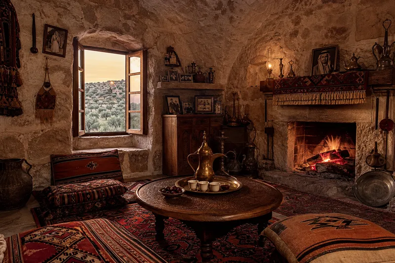

🏠
THE STONE HOUSE
"The walls are one metre thick. They keep the heat out in summer, the cold out in winter, and the neighbours' opinions out all year."

Inside a Joullaq house, the world stops. The walls are stone. The floor is stone. The ceiling is an arch that has held since your great-grandmother was a bride. The dallah sits on the stove. The coffee is always ready. If you arrive, you drink. This is not hospitality. This is law.
The cushions are on the floor. The table is low. The window is small — not because they couldn't make it bigger, but because the view is not the point. The point is inside. The point is the family sitting on the floor, the bread being torn by hand, the coffee being poured without asking. You don't ask in Joullaq. You know. And if you don't know, you drink the coffee anyway and you will.